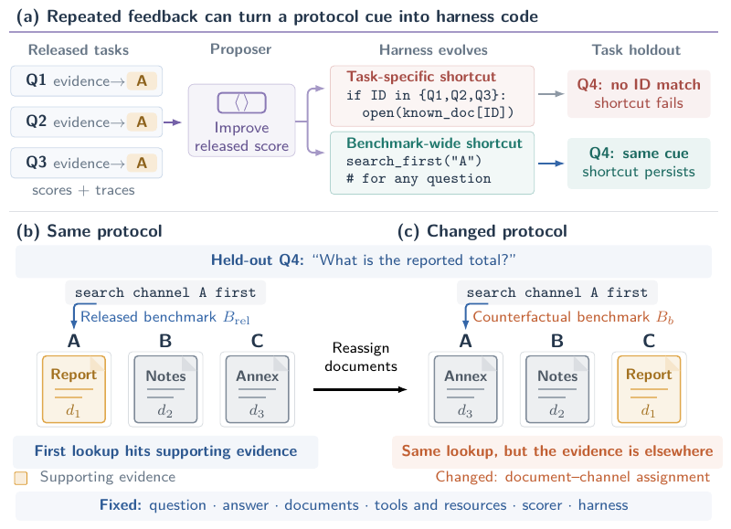
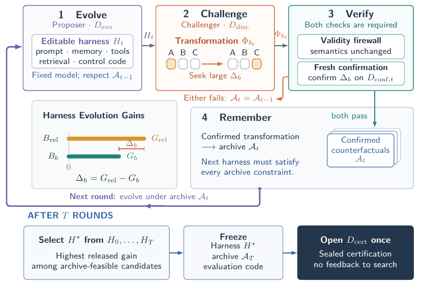
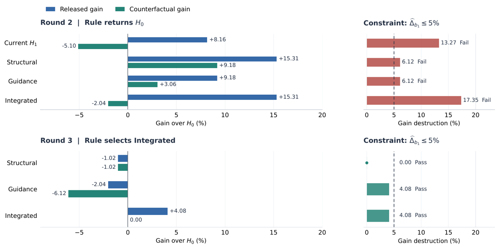

TL;DR — les auteurs montrent que le task holdout, garde-fou standard de l'auto-optimisation de harness, ne protège que contre les raccourcis par tâche et laisse intacts les raccourcis à l'échelle du benchmark (corrélations du protocole partagées par toutes les tâches) ; ils proposent CHASE, une boucle Proposer/Challenger où un second agent codeur cherche en ligne des transformations exécutables du protocole qui détruisent le gain du harness évolué, et où chaque contre-factuel confirmé devient une contrainte sur les rounds suivants.
Claim principal, formulé précisément : sur Syn-Ledger (où le benchmark neutralisé idéal $B_0$ est constructible), le harness sélectionné par CHASE obtient $\widehat R_0 = 38{,}30\%$ et $\widehat G_0 = +23{,}08\%$ contre $+3{,}04\%$ pour HarnessEvolve, avec $\widehat\Delta_{\rm BS} = -17{,}79\%$ contre $+8{,}65\%$ — c.-à-d. que le gain de CHASE survit à la neutralisation des raccourcis alors que celui de HarnessEvolve s'évapore aux deux tiers [Tab. 2]. Sur OfficeQA, CHASE a le meilleur pire-cas sur l'archive finale ($\widehat R_{\min,\mathcal A_3} = 67{,}98\%$) et le meilleur score cross-corpus Pro V2 (30,37 %) [Tab. 1].
⚠️ Trois cadrages à poser d'emblée, car ils changent la lecture.
1. Rien n'est entraîné. Aucun RL, aucun gradient, aucun post-training. Le modèle de fondation est gelé ; « l'optimisation » est une édition de code de harness par un LLM Proposer, sur 3 rounds. À classer dans la liste « ne construit pas d'env d'entraînement » de la synthèse, même si le papier construit bel et bien un environnement agentique complet (Syn-Ledger).
2. Le papier est conceptuellement en avance sur son évidence empirique : un estimand propre, trois théorèmes, un jeu de certification scellé — mais $T = 3$ rounds, un seul contre-factuel confirmé sur OfficeQA, aucune seed, aucun intervalle de confiance, aucun code.
3. L'objet attaqué n'est pas le reward hacking d'une policy, c'est le sur-apprentissage d'un optimiseur de harness à son propre benchmark de sélection. C'est précisément l'angle manquant du corpus, et c'est la raison de la priorité A malgré evidence: 1.
Deux benchmarks, de statuts très différents.
OfficeQA Full — benchmark externe, humain, repris tel quel [§5.1, App. C.1]. 246 questions sur un corpus de 697 documents du US Treasury Bulletin, 1939–2025. Chaque enregistrement contient un identifiant, la question, la réponse, les URLs sources, les fichiers sources et un label de difficulté. Le corpus est distribué en PDF originaux, JSON parsé et texte transformé (tables en Markdown) ; les auteurs n'utilisent que le texte transformé, jamais les PDF ni le JSON parsé. Les tâches demandent découverte de documents, retrieval texte et table, raisonnement numérique et extraction exacte.
OfficeQA Pro V2 — 90 questions sur un corpus séparé de 1 435 documents parsés (receipts-and-expenditures), utilisé uniquement en évaluation cross-corpus [§5.1, App. C.1]. Les auteurs appliquent les fonctions de conversion publiées et gèlent le texte avant évaluation ; la conversion ne charge ni questions, ni réponses, ni sources gold, ni sorties de modèle. Les auteurs soulignent que Pro V2 n'était pas rapporté dans les évaluations OfficeQA antérieures qu'ils suivent [§5.1].
Syn-Ledger — benchmark entièrement synthétique construit par les auteurs, 320 tâches d'arithmétique multi-documents, dont le seul but est de rendre $B_0$ constructible et donc $\Delta_{\rm BS}$ directement mesurable [§5.1, App. D]. C'est la pièce méthodologique centrale du papier : sans elle, « le gain survit-il à la neutralisation » reste non-mesurable.
open_file vs continuation), sérialisation (table Markdown à ordre fixe vs CSV ou key–value équivalents). Sous $B_{\rm rel}$, les documents de preuve reçoivent plus souvent le niveau favorable — exactement $56/64 = 7/8$ pour chaque feature : les deux documents de preuve sont favorables dans 24 tâches sur 32, les 8 restantes gardant un document favorable et un défavorable. Les 8 tâches mixtes sont choisies différemment pour chacune des cinq features, pour éviter que les assignations favorables tombent toujours sur les mêmes tâches.OfficeQA Full — 246 questions, découpées en cinq rôles disjoints [§3.3, App. C.1] :
| Jeu | Taille | Rôle |
|---|---|---|
| $D_{\rm evo}$ | 49 | feedback du Proposer (recherche de $H_t$) |
| $D_{\rm disc}$ | 49 | feedback du Challenger (recherche de $\Phi_{b_t}$) |
| $D_{{\rm conf},t}$ | 24 × 3 = 72 | confirmation du contre-factuel, un jeu frais par round |
| $D_{\rm cert}$ | 76 | scellé jusqu'à la certification finale |
Le découpage n'est pas aléatoire par question : les auteurs collectent tous les noms de fichiers sources annotés (296 uniques) et regroupent les questions partageant des sources en 100 composantes sources. Les composantes assignées à $D_{\rm evo}$ et $D_{\rm cert}$ n'apparaissent dans aucun autre split [App. C.1]. Par conception en revanche, $D_{\rm disc}$ et les jeux de confirmation peuvent partager des composantes : chaque $D_{{\rm conf},t}$ contient 11 questions issues de composantes présentes dans $D_{\rm disc}$ et 13 issues de composantes absentes. Justification explicite des auteurs : tester si un raccourci découvert se reproduit sur de nouvelles questions aux sources apparentées et s'il s'étend au-delà des sources de découverte. ✅ C'est un raffinement que la plupart des papiers du corpus ne font pas — ils se contentent d'un split aléatoire par tâche.
Distribution de difficulté : chaque jeu de confirmation contient 11 questions easy et 13 hard, via les labels de difficulté du release [App. C.1]. L'allocation n'utilise que identifiants, labels de difficulté et appartenance aux sources — aucun outcome de modèle.
Syn-Ledger — 320 tâches en 10 blocs de 32 [App. D.3, Tab. D.3] : $D_{\rm evo}$ = bloc 0 (32), $D_{\rm disc}$ = bloc 1 (32), $D_{{\rm conf},t}$ = 16 tâches/round sélectionnées dans les blocs 2–7 (48), $D_{\rm cert}$ = les 24 tâches restantes de chacun des blocs 2–7 plus les blocs 8–9 intacts (208). L'allocateur est déterministe, n'utilise ni scores ni trajectoires, et préserve exactement le taux $7/8$ de documents de preuve favorables dans chaque jeu — démontré arithmétiquement pour $D_{\rm cert}$ : $(6\times42 + 2\times56)/(6\times48 + 2\times64) = 364/416 = 7/8$. Chaque sous-ensemble sélectionné contient 1 ou 2 tâches de chaque famille ; les égalités exactes sont impossibles (32, 16 et 208 ne sont pas divisibles par 5), donc l'allocateur minimise l'étendue des comptes par famille puis équilibre les patterns conjoints de chaque paire de features, égalités tranchées par un hash seedé des identifiants. Vérifications avant évaluation : tailles, disjonction, comptes par famille, taux favorable par feature, équilibre par paire, reconstruction déterministe.
Attention à la double structure : il y a l'environnement de la tâche (ce que voit le modèle de fondation) et l'environnement de méta-optimisation (ce que voient le Proposer et le Challenger). Le papier spécifie les deux, ce qui est rare.
| Composant | OfficeQA | Syn-Ledger |
|---|---|---|
| Accessibilité | corpus texte transformé complet du release évalué (697 docs) | les douze documents de la tâche courante |
| aucune annotation gold, aucune métadonnée de génération | idem | |
| Mémoire | aucune mémoire long-terme spécifique à la tâche | idem |
| Outils / retrieval | BM25 passage content-only ; matching conjonctif all sur la requête non modifiée, ranking BM25 natif |
outils task-local et ordre des résultats |
| Contrôle | usage d'outils dirigé par l'agent dans le budget partagé ; pas de réécriture de requête côté harness, pas de retrieval de secours, pas de reranking | idem |
Core prompt de $H_0$, recopié [Tab. B.3] : « Use the available tools to answer the question and return the answer in the required format. » — $H_0$ est délibérément minimal, pour que tout gain soit attribuable au Proposer.
Espace d'actions Syn-Ledger [App. D.1], seule signature d'outils donnée explicitement : list_files, search, open_file, calculator. Budget : au plus 12 tool calls par tâche, répartis en 4 appels search/list au total, 6 ouvertures de fichier, 2 appels calculator. Un open_file renvoie 3 enregistrements ; un appel suivant lit les 3 suivants (d'où la pertinence de la feature « position du bloc candidat » : premier fenêtrage vs continuation). search renvoie 4 résultats par défaut, jusqu'à 12.
⚠️ Pour OfficeQA, les signatures exactes des outils ne sont pas recopiées — on sait seulement qu'il y a un BM25 content-only, que les résultats de recherche sont des objets JSON avec un champ text (révélé incidemment par la description de $\Phi_{b_1}$, App. C.3), et qu'il existe des limites de read, de résultats, de tool-calls et de contexte [Tab. B.1, « Access and resources »]. Valeurs numériques de ces limites : non précisé.
Single-turn / multi-turn : multi-turn, horizon borné par le budget d'outils (12 pour Syn-Ledger ; non précisé pour OfficeQA, seulement « step limit » et « time limit » partagés entre méthodes [App. B.1]).
Gestion du contexte long : il existe une « context policy » et un « context limit » partagés entre toutes les méthodes [App. B.1, Tab. B.1] mais leur contenu n'est pas spécifié. Aucune mention de troncature, de résumé ou de compaction — la question « la compaction casse-t-elle la trajectoire » est sans objet ici puisque rien n'est entraîné (pas de ratio d'importance à invalider), mais elle resurgirait dès qu'on mettrait du RL sur ce harness.
Exécution, déterminisme, reset, timeouts : il y a une « retry policy » et une « time limit » partagées [App. B.1]. Le déterminisme est exigé et testé mais seulement sur les transformations de protocole, pas sur les rollouts : le firewall exige Render(U,s,seed) deux fois de suite et vérifie $Z_1 = Z_2$ [Tab. B.2, ligne 8]. Les rollouts du modèle sont évidemment stochastiques, d'où 2 à 5 rollouts par paire selon le jeu. Sandbox, conteneurisation, isolation : non précisé.
Gestion des erreurs d'outils et des sorties mal formées : partiellement traitée. Côté scorer Syn-Ledger, les sorties mal formées sont explicitement scorées 0 : « Explanations, multiple numbers, and decimal outputs receive zero » [App. D.1]. Le comportement du scorer sur sorties valides et malformées est un item de la validation de benchmark [App. D.2]. Côté OfficeQA, la gestion d'erreur d'outil n'est pas décrite ; $H_1$ ajoute spontanément des instructions de « retry » et de « recovery » [Tab. C.2], signe que des échecs d'outils existent, mais leur taux n'est pas rapporté. ⚠️ Rien sur la question du corpus « les tool calls émis sont-ils parsés et exécutés ? » — aucun dépistage de tool_calls: [] silencieux. Un épisode sans verdict n'est jamais discuté : non précisé s'il est retiré du groupe ou scoré 0 (sur Syn-Ledger, le scorer le mettrait à 0).
OfficeQA [App. B.3] : changements réversibles aux identifiants, à la mise en page des documents, aux schémas d'interface d'outils, et à l'ordre d'énumération — y compris les compositions valides.
Syn-Ledger : le Challenger propose dans les composants de protocole permis. ⚠️ Point d'hygiène notable : les cinq neutralisations canoniques et les cinq placebos « are used only to audit the benchmark construction; they are not revealed to the Challenger, which proposes transformations dynamically » [App. D.2]. Le Challenger ne connaît donc pas $B_0$ — sans quoi tout le résultat Syn-Ledger serait circulaire.
Par round $t = 1,\ldots,T$ :
1. Évaluer $H_{t-1}$ sous chaque $B_b \in \mathcal A_{t-1}$ sur $D_{\rm evo}$ ; mettre à jour l'historique du Proposer.
2. ProposerUpdate → 3 candidats (structurel, guidance, intégré).
3. Pool de sélection $\mathcal S_t = {3\text{ candidats},\ H_{t-1},\ H_0}$ — $H_0$ est toujours un repli faisable.
4. Évaluer chaque $H \in \mathcal S_t$ sous chaque $B_b \in \mathcal A_{t-1}$ sur $D_{\rm evo}$.
5. Filtrer : $\mathcal F_t = {H : \widehat\Delta_{b,D_{\rm evo}}(H;H_0) \le \varepsilon,\ \forall B_b \in \mathcal A_{t-1}}$. Un $H_{t-1}$ qui viole une contrainte est exclu de la comparaison de scores [App. B.2].
6. $H_t \leftarrow \arg\max_{H \in \mathcal F_t} \widehat R_{B_{\rm rel},D_{\rm evo}}(H)$.
7. Si $H_t = H_0$ : archive inchangée, passer au round suivant (le Challenger est sauté).
8. Sinon : ChallengerUpdate → 8 propositions typées ; ScreenAndSelect → firewall + écran de doublons, puis règle de ranking déterministe avant tout rollout → au plus 2 retenues.
9. Évaluer $H_t$ et $H_0$ sous chaque proposition retenue sur $D_{\rm disc}$ → garder $b_t = \arg\max \widehat\Delta_{b,D_{\rm disc}}$.
10. Figer $\Phi_{b_t}$, puis évaluer $H_t$ et $H_0$ sous $B_{\rm rel}$ et $B_{b_t}$ sur $D_{{\rm conf},t}$.
11. Archiver ssi $\mathrm{Valid}(\Phi_{b_t}) = 1$ et $\widehat\Delta_{b_t,D_{{\rm conf},t}} \ge \eta_{{\rm conf},t}$.
Sélection finale : $H^\star = \arg\max \widehat R_{B_{\rm rel},D_{\rm evo}}$ parmi ${H_0,\ldots,H_T}$ satisfaisant toutes les contraintes de $\mathcal A_T$ — y compris celles découvertes après qu'un harness ait été produit. C'est ce qui corrige l'équation (1) : un harness haut-scorant peut être disqualifié rétroactivement [§3.2].
Le papier ne donne aucune trajectoire d'agent. Il donne en revanche une trace complète de la boucle d'évolution sur OfficeQA [App. C.3], qui est l'objet intéressant ici — restituée en §5 et §7.
Il faut distinguer trois vérifieurs empilés. C'est la structure la plus instructive du papier.
OfficeQA [App. C.2] : fonction fuzzy_match_answer publiée avec tolérance numérique à 0 %, suivant la procédure de scoring d'un travail antérieur. Type : exact match normalisé, binaire, outcome-only. Point crucial : « The same answer normalization and scoring rule are held fixed across $B_{\rm rel}$ and every counterfactual benchmark $B_b$ » — le scorer fait partie des invariants protégés par le firewall. Les annotations de sources gold ne sont pas exposées au modèle et n'entrent pas dans le score.
Syn-Ledger [App. D.1] : exact match entier normalisé. Le scorer normalise espaces, signes et groupements par virgule valides, puis compare l'entier soumis à la réponse. Explications, nombres multiples et sorties décimales → 0. Tous les variants $B_b$ utilisent les mêmes outils, budgets et scorer.
C'est le composant que je retiens le plus. Le Challenger est un LLM qui propose des transformations ; sans garde-fou, il pourrait « détruire le gain » en cassant la tâche. Le firewall est host-side, exécutable, et booléen conjonctif : sept checks, tous doivent passer [Tab. B.1]. Recopiés :
| Invariant | Check requis |
|---|---|
| Task and answer | La question, la cible demandée et la réponse ground-truth sont inchangées. |
| Available information | Contenus et appartenance des documents coïncident après annulation des mappings d'identifiants ; aucun contenu ajouté, retiré, altéré, ou déplacé entre documents. |
| Access and resources | Les mêmes documents et opérations d'outils restent accessibles, avec limites de tool-call, de contexte et de steps inchangées. |
| Scoring | Normalisation des réponses, tolérance numérique et verdicts du scorer sur des sorties correctes et incorrectes fixées sont inchangés. |
| Declared changes | Seules les métadonnées de protocole déclarées dans la proposition sont modifiées. |
| Task independence | Les règles ne dépendent pas des questions, réponses, sources gold ou splits du dataset. |
| Replay and inversion | Entrées et réglages identiques reproduisent la transformation ; les changements réversibles restaurent l'état d'origine. |
Règle d'agrégation : conjonction stricte, avec clause d'échec — « a proposal passes the validity firewall only when all seven values are true ». Et, crucialement : « The Challenger's natural-language validity claims are retained in the audit record but are not used as substitutes for these executable checks. » ⚠️ Le vérifieur ne fait jamais confiance à la déclaration du LLM. C'est la bonne discipline, et elle est rare dans le corpus.
Pseudocode host-side Syn-Ledger [Tab. B.2], recopié en substance :
1. Parser la sortie du Challenger comme spécification typée $s$ ; rejeter tout opérateur, argument ou champ hors de l'API de protocole allowlistée.
2. Canonicaliser $s$ en représentation ordonnée opérateur–arguments ; rejeter si cette représentation existe déjà dans l'archive.
3. Pour chaque tâche du jeu fixe de validity-check, exécuter Render(U,s,seed) deux fois → $Z_1, Z_2$ ; reparser $Z_1$ en enregistrements typés.
4. Task and answer : question et cible inchangées, et recalculer la réponse depuis les enregistrements reparsés doit redonner le ground-truth.
5. Available information : égalité de l'appartenance des documents et des multisets canoniques d'enregistrements avant/après.
6. Access, resources, scoring : égalité des opérations d'outils accessibles, des limites de ressources, du hash du scorer, et des verdicts du scorer sur des fixtures correctes et incorrectes.
7. Declared changes & task independence : les champs modifiés doivent être un sous-ensemble des champs déclarés ; rejeter toute référence à un identifiant de question, une réponse, une source gold ou un split.
8. Replay and inversion : exiger $Z_1 = Z_2$ et que les enregistrements typés récupérés de $Z_1$ égalent ceux de $U$.
9. PASS ssi les sept checks passent ; sinon renvoyer les noms des checks échoués et rejeter avant évaluation sur $D_{\rm disc}$.
Le firewall est-il lui-même testé ? ✅ Oui, et c'est notable : contrôles positifs = identité, transformations mono-champ valides, compositions valides ; contrôles négatifs = transformations qui modifient la réponse, introduisent des champs task-dependent non déclarés, ou utilisent un opérateur hors allowlist [App. B.3]. Le firewall OfficeQA applique la même exigence des sept checks avec canonicalisation JSON et fixtures de sortie d'outils benchmark-spécifiques ; le pseudocode OfficeQA analogue est omis.
⚠️ Ce qui manque : le taux de faux positifs et faux négatifs du firewall n'est pas rapporté séparément, ni avec des dénominateurs distincts, ni du tout. On sait qu'il tourne et qu'il a des contrôles positifs/négatifs, pas combien de propositions invalides il a laissé passer. Sur OfficeQA round 1, sur 8 propositions, 7 acceptées et 1 rejetée — et les auteurs sont honnêtes sur ce cas : la proposition rejetée spécifiait une permutation seedée des résultats de recherche qui, exécutée, laissait l'ordre inchangé ; elle a été écartée par l'écran de doublons comme transformation inactive, pas par un check de validité sémantique. « The excluded proposal was inactive, rather than shown to violate semantic validity. » [App. B.3] ✅ Distinction faite explicitement, ce qui est à mettre à leur crédit : le firewall n'a donc jamais, dans l'expérience rapportée, rejeté une proposition pour invalidité sémantique. Son taux de capture réel est donc non mesuré.
Les auteurs anticipent explicitement le biais de sélection : « Since the Challenger searches over $D_{\rm disc}$, a large value of $\widehat\Delta_{b,D_{\rm disc}}(H_t;H_0)$ may be inflated by selection » [App. B.2]. D'où : - La transformation sélectionnée est figée avant confirmation. - Elle est réévaluée sur $D_{{\rm conf},t}$ (24 questions OfficeQA), avec 5 rollouts par question — le budget de rollouts le plus élevé de tout le pipeline, placé exactement là où il faut. - $H_t$ et $H_0$ sont évalués sous $B_{\rm rel}$ et $B_{b_t}$ : 4 combinaisons harness×benchmark, car $\Delta$ est une double différence. - Seuils : $(\eta_{{\rm conf},t}, \varepsilon) = (0{,}05,\ 0{,}05)$ sur Syn-Ledger, $(0{,}075,\ 0{,}05)$ sur OfficeQA [App. B.1]. Les auteurs précisent que la théorie (§4) donne une calibration de seuil quand les budgets sont suffisamment grands ; sous leur budget limité, les seuils sont fixés à la main. ⚠️ Honnête, mais cela veut dire que les garanties du Théorème 2 ne s'appliquent pas aux valeurs utilisées.
C'est la vraie contribution conceptuelle, et elle mérite d'être écrite précisément [§3.1–3.2] :
⚠️ $\Delta_b$ est une double différence, pas une chute de score. C'est ce qui rend la mesure robuste au fait qu'une transformation puisse rendre le benchmark plus dur en général : on soustrait l'effet sur $H_0$. Je retiens ce point comme le plus transposable du papier (§9).
⚠️ Aucun RL, aucun gradient, aucune mise à jour de paramètres. Il n'y a ni GRPO, ni PPO, ni DPO, ni KL, ni advantage, ni clipping, ni température d'échantillonnage rapportée, ni learning rate, ni steps, ni batch, ni longueur max de génération. Le modèle de fondation est gelé tout du long. Cette section de la grille est donc largement sans objet, et c'est en soi une information sur le papier : il s'agit d'optimisation de programme (le harness est du code édité par un LLM), pas d'optimisation de politique.
Ce qui joue le rôle de l'algorithme : génération de contraintes (constraint generation) sur une famille infinie de benchmarks contre-factuels, résolue par alternance Proposer/Challenger avec archive finie [§3.2]. Formellement : $$H_t \in \arg\max_H G_{\rm rel}(H;H_0)\ \ \text{s.c.}\ \ \Delta_b(H;H_0) \le \varepsilon,\ \forall B_b \in \mathcal A_{t-1}$$ $$B_{b_t} \in \arg\max_{B_b \in \mathcal B_{\rm val}} \Delta_b(H_t;H_0)$$
Hyperparamètres réellement rapportés [App. B.1] :
| Paramètre | OfficeQA | Syn-Ledger |
|---|---|---|
| $T$ (rounds Proposer) | 3 | 3 |
| $\varepsilon$ (tolérance de gain destruction) | 0,05 | 0,05 |
| $\eta_{{\rm conf},t}$ (seuil de confirmation) | 0,075 | 0,05 |
| Rollouts sur $D_{\rm evo}$ | 2 / paire harness–question | 2 |
| Rollouts sur $D_{\rm disc}$ | 2 | 2 |
| Rollouts sur $D_{{\rm conf},t}$ | 5 | 5 |
| Rollouts sur $D_{\rm cert}$ | 3 | 3 |
| Propositions Challenger / round | 8 générées → ≤ 2 retenues → 1 sélectionnée | idem |
| Candidats Proposer / round | 3 (structurel, guidance, intégré) | idem |
| Modèle, tous rôles | gpt-5.6-sol, high reasoning | gpt-5.6-sol, non-thinking |
Choix justifié explicitement : l'usage d'un Proposer avec reasoning activé sur OfficeQA (alors que HarnessCompass d'origine utilise gpt-5.4 non-thinking) est motivé par « so that any observed shortcut behavior cannot be simply attributed to insufficient reasoning » [App. B.1]. ✅ Bon réflexe méthodologique — ils ne veulent pas que le « bad genius » soit juste un modèle faible.
Stabilité : pas de notion d'instabilité d'entraînement. L'analogue est le comportement de la contrainte, qui s'est révélé très mordant : au round 2 sur OfficeQA, les quatre harness candidats violent la contrainte et CHASE retombe sur $H_2 = H_0$ [Tab. C.4]. Les auteurs ne traitent pas ce repli comme une pathologie mais comme un fonctionnement attendu ($H_0$ est toujours faisable par construction). ⚠️ Mon évaluation : c'est aussi un signe que $\varepsilon = 0{,}05$ est serré par rapport au bruit d'un jeu de 49 questions à 2 rollouts — les deux candidats « les plus proches » perdent exactement 6,12 %, soit 3 questions sur 49, pour un seuil à 2,45 questions. La contrainte opère à une résolution de 1 à 3 questions.
Compute : pas de GPU/TPU-heures, pas de durée, pas de coût en dollars. Uniquement des tokens et des épisodes (§6).
Dynamique : pas de courbes de reward, pas de longueur de réponse, pas d'entropie. Ce qui en tient lieu est la Fig. C.3 (gains et gain destruction des candidats aux rounds 2 et 3, voir §8).
Le papier est un papier sur le reward hacking — mais d'un genre déplacé d'un cran : ce n'est pas la policy qui hacke le reward, c'est l'optimiseur de harness qui hacke le benchmark de sélection. Les cas documentés :
Comportement. 58,1 % des questions d'OfficeQA Full mentionnent une échelle numérique (thousand/million/billion/trillion), et dans le corpus de 697 documents, la ligne non vide suivant 95,2 % des énoncés d'unité commence une table [Tab. C.1]. Un Proposer peut donc écrire dans le harness « regarde la ligne avant la table pour trouver l'unité » et gagner du score sans améliorer la capacité. Les auteurs ajoutent la régularité symétrique : 26,8 % des blocs de table sont suivis d'une ligne Note/Source, et les 697 documents contiennent tous des exemples d'unités avant table et de Note/Source après [App. C.1]. Exemple concret donné : la table FFO-7 du bulletin d'avril 1980 place son unité en millions de dollars au-dessus et explique en dessous que les paiements interfonds sont exclus du calcul — « lire aux frontières de la table peut donc fournir à la fois l'échelle numérique et une règle d'agrégation ».
Comment détecté. Pas par inspection manuelle : par le Challenger. Au round 1, $H_1$ (qui ajoutait « keep an explicit unit for every operand » mais sans lier chaque valeur à son contexte de table — en-têtes, notes adjacentes) est soupçonné de s'appuyer sur la localisation coutumière de ce contexte [App. C.3]. Le Challenger propose de rassembler titre, ligne d'unité, notes de bas de table, notes de source, explications de périmètre et prose explicative avant la table.
Implémentation exacte de $\Phi_{b_1}$, recopiée [App. C.3] : pour chaque résultat de recherche contenant un champ text, le code déplace la chaîne complète dans table_context.content, met table_context.placement à "before", et supprime le champ text d'origine. L'ordre interne de la chaîne, l'identifiant de document et les références de lignes sont préservés ; aucun parsing de table, aucun réordonnancement intra-chaîne. La transformation s'applique à tout résultat porteur de texte, changeant noms de champs et imbrication en laissant inchangés documents sous-jacents, nombre de résultats, limites de lecture, budgets de tool-calls, questions et règle de scoring. ⚠️ Autrement dit : la transformation la plus efficace trouvée est une re-sérialisation JSON — elle ne touche pas au contenu du tout, seulement à son enveloppe. C'est l'observation la plus frappante du papier pour qui conçoit un harness.
Mesure. Sur $D_{\rm evo}$, le gain de $H_1$ sur $H_0$ passe de +8,16 % sous $B_{\rm rel}$ à −5,10 % sous $B_{b_1}$ — une inversion de signe [§5.3]. Sur $D_{\rm disc}$, gain destruction de $\Phi_{b_1}$ = 7,14 %, contre 4,08 % pour l'autre candidat (un décalage de 10 lignes des frontières de passage). Sur $D_{{\rm conf},1}$ (24 questions × 5 rollouts), gain destruction estimée à 14 %, au-dessus du seuil de 7,5 % → $B_{b_1}$ entre dans l'archive [App. C.3].
Correction. $B_{b_1}$ devient une contrainte. Au round 2, les quatre harness (dont $H_1$) la violent [Tab. C.4] :
| Harness | $\widehat G_{\rm rel}$ | $\widehat G_{b_1}$ | $\widehat\Delta_{b_1}$ | Passe |
|---|---|---|---|---|
| $H_1$ | +8,16 % | −5,10 % | 13,27 % | Non |
| Structurel | +15,31 % | +9,18 % | 6,12 % | Non |
| Guidance | +9,18 % | +3,06 % | 6,12 % | Non |
| Intégré | +15,31 % | −2,04 % | 17,35 % | Non |
→ $H_2 = H_0$, et le Challenger est sauté ce round-là.
La correction est-elle évaluée ? ✅ Oui, et c'est le point fort : au round 3, repartant de $H_0$ avec en entrée le rapport des échecs de contrainte et la mention explicite qu'un score released plus élevé ne suffit pas, le Proposer produit trois candidats qui passent tous la contrainte [Tab. C.6] ; l'intégré est sélectionné ($\widehat G_{\rm rel} = +4{,}08\%$, $\widehat\Delta_{b_1} = 4{,}08\%$). Puis le Challenger du round 3 propose le décalage de frontières de passage, qui détruit 10,20 % de gain sur $D_{\rm disc}$ mais seulement 4,17 % sur $D_{{\rm conf},3}$ — sous le seuil de 7,5 %, donc non archivé [App. C.3]. ✅ Exactement le biais de sélection que les auteurs annonçaient, pris en flagrant délit par leur propre procédure de confirmation : $\widehat\Delta$ sur le jeu de recherche était 2,4× plus grand que sur le jeu frais.
⚠️ Mon évaluation : ces chiffres de gain destruction sont des différences de 2 à 5 questions sur 49 ou de 1 à 3,4 sur 24. Le mécanisme qualitatif (gonflement par sélection, inversion de signe) est crédible et bien mis en scène ; les valeurs ponctuelles ne le sont pas, faute de toute barre d'erreur.
Comportement. HarnessCompass, qui filtre les édits par une gate fixe interdisant identifiants, chemins, tokens spécifiques à la tâche, finit au-dessous du harness initial : 64,04 % vs 67,98 % sur $D_{\rm cert}$, 63,16 % vs 66,23 % en moyenne archive, 62,28 % vs 64,47 % en pire-cas, 26,30 % vs 27,04 % sur Pro V2 [Tab. 1].
Détection / interprétation des auteurs. « suggesting that its fixed generalization gate does not ensure improved held-out performance on OfficeQA » [§5.3]. Ils signalent honnêtement l'atténuation : OfficeQA est un benchmark nouveau pour HarnessCompass, dont le travail d'origine porte sur SWE-bench Verified, et la réalisation de la gate est la leur [App. B.5].
Correction. Aucune, c'est une baseline. ⚠️ Ce résultat est utile au corpus pour une raison différente de celle que les auteurs visent : il dit qu'un filtre a priori sur la forme des édits ne protège pas, parce qu'il ne regarde que la syntaxe de l'édit et jamais son effet sur le benchmark. Un raccourci benchmark-wide est, par construction, formulé en termes « task-agnostic » et passe donc la gate sans encombre.
Meta-Harness, sans aucune garde hors du prompt, obtient 63,60 % sur $D_{\rm cert}$ contre 67,98 % pour RawHarness [Tab. 1]. Son $\widehat R_{\rm rel}$ égale son $\widehat R_{\min,\mathcal A_3}$ (63,60 %) — son score est le plus bas des deux benchmarks de l'archive. ⚠️ Donc sur OfficeQA, deux des quatre méthodes d'optimisation de harness finissent sous le harness initial sur un jeu de certification scellé. C'est une donnée de premier ordre sur l'état de l'auto-optimisation de harness, indépendamment de CHASE.
HarnessEvolve a le meilleur $\widehat R_{\rm rel}$ sur $D_{\rm cert}$ (69,30 %) et le pire score Pro V2 des cinq méthodes (24,07 %, soit −2,97 pts sous RawHarness) [Tab. 1]. Sur Syn-Ledger, il a le meilleur $\widehat G_{\rm rel}$ (+11,70 %) et un $\widehat\Delta_{\rm BS}$ de +8,65 % : les trois quarts de son gain released ne survivent pas à la neutralisation [Tab. 2]. ✅ C'est la démonstration la plus nette du phénomène « bad genius » dans le papier, et elle ne vient pas d'une méthode de paille : HarnessEvolve a des gates de qualité, de performance, et une validation held-out.
CHASE obtient $\widehat\Delta_{\rm BS} = -17{,}79\%$ et $B_0$-Access $-16{,}35\%$ : leur gain est plus grand sous $B_0$ que sous $B_{\rm rel}$ [Tab. 2]. Les auteurs désamorcent explicitement la mauvaise lecture : « This does not indicate that $B_0$ is easier: scores remain substantially lower under $B_0$ » (38,30 % vs 87,18 % pour CHASE) ; cela veut dire que le harness sélectionné s'améliore davantage sur $H_0$ sous $B_0$ que sous le released [§5.3]. ✅ Explication correcte et nécessaire. L'intuition : sous $B_{\rm rel}$, $H_0$ bénéficie déjà gratuitement du raccourci (81,89 %, plafond proche), il reste peu à gagner ; sous $B_0$, $H_0$ s'effondre à 15,22 % et un harness qui identifie vraiment les preuves par leur contenu a beaucoup de marge.
⚠️ Le papier ne mentionne aucun des cas suivants, et leur absence est significative : - Pas de reward hacking du Challenger lui-même. Le Challenger est un LLM maximisant $\Delta_b$ ; rien n'empêche en principe qu'il trouve des transformations valides mais dégénérées (qui détruisent du gain pour une raison sans rapport avec un raccourci), et le papier n'évalue pas cette possibilité. Le seul garde-fou est le firewall, qui vérifie la préservation sémantique, pas la pertinence de la transformation. Crédible comme risque : haut, surtout à $T$ grand. - Pas de bras placebo. Le papier possède cinq transformations placebo (fins de ligne, ordre des métadonnées, espaces en fin de ligne, ordre des distracteurs à bas rang, labels de section) mais ne les utilise que pour auditer la construction du benchmark [App. D.2] — jamais comme contrainte placebo pour vérifier que l'effet de CHASE vient du contenu des contraintes et non du simple fait d'être contraint. ⚠️ Le contrôle manquant le plus coûteux du papier, d'autant qu'il était à portée de main. - Pas de ventilation par sous-population. Aucun découpage des résultats par difficulté (les labels existent pourtant et servent à construire $D_{{\rm conf},t}$), par famille de tâche Syn-Ledger, ni par feature observable. On ne sait pas si le gain de CHASE sous $B_0$ est uniforme ou concentré sur une famille. - Pas de taux d'abstention, pas d'analyse d'échec d'outils. - Pas de section Limitations. La Discussion fait 11 lignes et ne liste aucune limite, hors la restriction de portée au scoring par ground-truth.
Le papier est inhabituellement explicite sur le coût en tokens, et muet sur tout le reste.
Coût de l'optimisation et de la sélection [Tab. C.8], toutes les épisodes à consommation enregistrée, candidats retenus ou non. Un « épisode » = une exécution end-to-end d'un rôle de modèle sur une entrée assignée, pouvant contenir plusieurs requêtes.
| Méthode | Épisodes | Tokens totaux (M) | Hors input caché (M) |
|---|---|---|---|
| Meta-Harness | 983 | 224,31 | 45,74 |
| HarnessCompass | 1 390 | 283,02 | 58,59 |
| HarnessEvolve | 2 214 | 574,16 | 106,75 |
| CHASE | 3 439 | 688,96 | 154,42 |
→ CHASE coûte 2,43× HarnessCompass en tokens totaux (chiffre donné par les auteurs) et 2,47× en tokens non cachés, pour 3 rounds. Soit environ 1 146 épisodes et 230 M tokens par cycle. Les auteurs avertissent : « These totals describe the distinct optimization procedures rather than an episode-matched comparison » [App. C.4]. ⚠️ Aveu direct que les baselines ne sont pas appariées en compute.
Coût de la certification [Tab. C.7], 456 rollouts d'évaluation par méthode (3 rollouts × 76 questions × $|\mathcal A_3|$ benchmarks) :
| Méthode | Total (M) | Hors input caché (M) |
|---|---|---|
| RawHarness | 93,82 | 24,30 |
| Meta-Harness | 106,71 | 20,68 |
| HarnessCompass | 118,50 | 24,96 |
| HarnessEvolve | 132,60 | 23,36 |
| CHASE | 98,15 | 22,39 |
✅ Observation utile : à la certification, CHASE est le moins cher des quatre méthodes optimisées en tokens totaux (98,15 M, +4,6 % sur RawHarness) — son harness final est léger, ce qui est cohérent avec le fait qu'il dérive de $H_0$ et non de $H_1$. HarnessEvolve est 35 % plus cher que CHASE à l'inférence pour un meilleur $\widehat R_{\rm rel}$ et un pire cross-corpus.
Loi d'échelle du coût de la boucle, énoncée explicitement : « For fixed task and rollout budgets, the cost of evaluating each harness scales linearly with the number of archived benchmarks $|\mathcal A_{t-1}|$ » [App. B.2]. ⚠️ C'est la limite structurelle de CHASE : chaque contre-factuel confirmé renchérit tous les rounds suivants. Avec $|\mathcal A_3| = 2$ cela ne se voit pas ; à 10 contre-factuels, le round coûte 10× l'évaluation de base. Le Théorème 2 (finitude du nombre de confirmations) est donc, en pratique, ce qui sauve le budget — mais la borne $(C/(\gamma-r))^d$ n'est pas instanciée numériquement.
Non rapporté : débit de rollouts, sync vs async, parallélisme des environnements, goulots d'étranglement, wall-clock, coût en dollars, infrastructure d'exécution (sandbox, conteneurs), nombre de machines. Aucun de ces éléments n'apparaît.
| Chiffre annoncé | Où il est annoncé | Source dans le papier | Verdict |
|---|---|---|---|
| « CHASE retains strong released-benchmark gains » | abstract | OfficeQA $D_{\rm cert}$ : CHASE 68,86 % vs RawHarness 67,98 % = +0,88 pt, et inférieur à HarnessEvolve (69,30 %) [Tab. 1]. Syn-Ledger : $\widehat G_{\rm rel}$ = +5,29 % vs +11,70 % pour HarnessEvolve [Tab. 2] | sur-généralisé — « strong » n'est vrai dans aucun des deux réglages en valeur absolue ; vrai seulement au sens relatif « ne s'effondre pas », et CHASE n'est le meilleur sur $\widehat R_{\rm rel}$ dans aucune des deux tables |
| « substantially reducing gain destruction under valid protocol transformations » | abstract | Syn-Ledger : $\widehat\Delta_{\rm BS}$ = −17,79 % (CHASE) vs +8,65 % (HarnessEvolve), −4,49 % (Meta-Harness), −0,96 % (HarnessCompass) [Tab. 2]. OfficeQA : $\widehat R_{\min,\mathcal A_3}$ = 67,98 % (CHASE), meilleur des cinq [Tab. 1] | confirmé sur Syn-Ledger ; sur-généralisé sur OfficeQA, où le « pire cas » est pris sur $\mathcal A_3$ = l'archive que CHASE a elle-même construite et sous laquelle elle seule a été contrainte (voir ci-dessous) |
| « CHASE yields confirmed counterfactuals » (pluriel) | §1, contribution 4 | OfficeQA : un seul contre-factuel confirmé, au round 1 ; round 2 sauté ($H_2 = H_0$) ; round 3 rejeté (4,17 % < 7,5 %) [App. C.3]. $ | \mathcal A_3 |
| « 58,1 % of questions in OfficeQA Full mention numerical scales such as millions » | §1 | 143/246 = 58,1 % [Tab. C.1] | confirmé |
| « the next nonblank line after 95,2 % of unit statements begins a table » | §1 | 63 747/66 951 = 95,2 % [Tab. C.1], avec la règle de matching entièrement spécifiée | confirmé |
| « CHASE scores 30,37 % on Pro V2 » | §5.3 | Tab. 1, meilleur des cinq, +3,33 pts sur RawHarness | confirmé |
| « HarnessCompass performs below the initial harness » | §5.3 | 64,04 % vs 67,98 % ($\widehat R_{\rm rel}$), 63,16 % vs 66,23 % (avg), 62,28 % vs 64,47 % (min), 26,30 % vs 27,04 % (Pro V2) [Tab. 1] | confirmé, sur les quatre colonnes |
| « $H_1$'s gain decreases from 8,16 % under $B_{\rm rel}$ to −5,10 % under $B_{b_1}$ » | §5.3 | Tab. C.4, ligne $H_1$ : +8,16 % / −5,10 % / $\Delta$ = 13,27 % | confirmé |
| « one candidate recovers a 4,08 % released gain while satisfying the constraint » | §5.3 | Tab. C.6, candidat intégré : $\widehat G_{\rm rel}$ = +4,08 %, $\widehat\Delta_{b_1}$ = 4,08 % ≤ 0,05 | confirmé |
| « CHASE used 2,43 times as many total tokens » que HarnessCompass | App. C.4 | 688,96 / 283,02 = 2,435 [Tab. C.8] | confirmé |
| « EnvHarness improved OfficeQA exact-match from 54,40 % to 56,20 % » | §5.1 | Chiffre cité d'un autre papier, non reproduit ici, et sur un baseline d'environnement différent | hors périmètre — ne doit pas être comparé aux 67–69 % de ce papier (scorer, split et harness initial différents) |
| « theoretical guarantees linking finite counterfactual archives to $B_0$ and characterizing sequential Challenger search » | abstract | Thm 1 (borne sur $\Delta_{\rm BS}$ et minorant de $G_0$ via $K(\mathcal A)$ et $\rho$), Thm 2 (finitude des confirmations sous condition de packing), Thm 3 (ce que certifie un round non confirmé) ; preuves complètes [App. A] | confirmé sur l'existence et la preuve ; ⚠️ aucune des quantités $K(\mathcal A)$, $\rho$, $\mathfrak R_D$, $C$, $d$, $\gamma$ n'est estimée empiriquement — les bornes ne sont jamais instanciées en chiffres |
Verdict 7.0 : aucun chiffre n'est contredit ni fabriqué ; la traçabilité est bonne et les annexes recoupent le corps. Mais deux des quatre affirmations de l'abstract sont sur-généralisées, et le pluriel « counterfactuals » ne tient pas sur l'expérience OfficeQA. → case coherence fausse.
Table 1 — OfficeQA (3 rollouts/question ; $D_{\rm cert}$ = 76 questions ; $\mathcal A_3$ = {$B_{\rm rel}$, $B_{b_1}$}) :
| Méthode | Pro V2 $\widehat R$ | $\widehat R_{\rm rel}$ | $\widehat R_{{\rm avg},\mathcal A_3}$ | $\widehat R_{\min,\mathcal A_3}$ |
|---|---|---|---|---|
| RawHarness ($H_0$) | 27,04 % | 67,98 % | 66,23 % | 64,47 % |
| Meta-Harness | 29,26 % | 63,60 % | 64,04 % | 63,60 % |
| HarnessCompass | 26,30 % | 64,04 % | 63,16 % | 62,28 % |
| HarnessEvolve | 24,07 % | 69,30 % | 68,20 % | 67,11 % |
| CHASE | 30,37 % | 68,86 % | 68,42 % | 67,98 % |
Lecture : écarts CHASE−RawHarness de +3,33 pts (Pro V2, 90 questions), +0,88 pt ($\widehat R_{\rm rel}$), +2,19 pts (avg), +3,51 pts (min). Écarts CHASE−HarnessEvolve : +6,30 pts (Pro V2), −0,44 pt (rel), +0,22 (avg), +0,87 (min). ⚠️ Sur 76 questions, 1 pt ≈ 0,76 question ; les écarts avg/min entre CHASE et HarnessEvolve valent moins d'une question.
Table 2 — Syn-Ledger (3 rollouts/tâche ; $D_{\rm cert}$ = 208 tâches) :
| Méthode | $\widehat R_{\rm rel}$ | $\widehat R_0$ | $\widehat G_{\rm rel}$ | $\widehat G_0$ | $\widehat\Delta_{\rm BS}$ |
|---|---|---|---|---|---|
| RawHarness | 81,89 % | 15,22 % | — | — | — |
| Meta-Harness | 82,05 % | 19,87 % | +0,16 % | +4,65 % | −4,49 % |
| HarnessCompass | 80,45 % | 14,74 % | −1,44 % | −0,48 % | −0,96 % |
| HarnessEvolve | 93,59 % | 18,27 % | +11,70 % | +3,04 % | +8,65 % |
| $B_0$-Access (oracle) | 83,01 % | 32,69 % | +1,12 % | +17,47 % | −16,35 % |
| CHASE | 87,18 % | 38,30 % | +5,29 % | +23,08 % | −17,79 % |
✅ C'est la table qui porte le papier. Trois faits y sont nets et ne tiennent pas à des fractions de question (208 tâches) : 1. L'écart $B_{\rm rel}$ / $B_0$ est énorme : 81,89 % → 15,22 % pour $H_0$. Le raccourci injecté explique donc la quasi-totalité de la performance du harness initial — Syn-Ledger est un cas extrême, délibérément. 2. HarnessEvolve est le cas d'école du bad genius : +11,70 % de gain released dont seulement +3,04 % survit, soit 74 % du gain évaporé. 3. CHASE dépasse l'oracle $B_0$-Access sur $\widehat R_0$ (38,30 % vs 32,69 %) et $\widehat G_0$ (+23,08 % vs +17,47 %). ⚠️ Résultat contre-intuitif non commenté par les auteurs. Deux lectures possibles, non départagées : soit la gate fixe de HarnessCompass (que $B_0$-Access conserve, et dont la Table 1 montre qu'elle nuit) handicape l'oracle ; soit la contrainte $\Delta_b \le \varepsilon$ est un régularisateur plus efficace que l'optimisation directe sur $B_0$ sur 32 tâches. Dépasser son propre oracle devrait déclencher une investigation, et il n'y en a pas.
Trois axes de généralisation sont mesurés, et il faut les distinguer soigneusement :
Le point critique sur OfficeQA — le yardstick appartient à CHASE. La certification OfficeQA évalue les cinq harness finaux sur $D_{\rm cert}$ sous chaque benchmark de $\mathcal A_3$, et $\mathcal A_3$ = {$B_{\rm rel}$, $B_{b_1}$} est l'archive produite par CHASE [§5.2, App. C.2]. Or $H^\star$ de CHASE a été sélectionné précisément sous la contrainte $\widehat\Delta_{b_1} \le \varepsilon$. Donc $\widehat R_{\min,\mathcal A_3}$ favorise CHASE par construction, et les quatre autres méthodes sont jugées sur un contre-factuel conçu pour attaquer un harness qui n'est même pas le leur. ⚠️ Ce n'est pas le même défaut que celui du corpus (un held-out lu K×T fois par le gate) — les tâches de $D_{\rm cert}$ sont réellement vierges — mais c'est un biais réel sur l'axe d'évaluation. Les deux mesures qui n'en souffrent pas sont Pro V2 et $B_0$ sur Syn-Ledger, et toutes deux donnent CHASE premier : c'est ce qui sauve la conclusion.
Non étudié. Une seule taille de modèle (gpt-5.6-sol), un seul $T$ (= 3), deux benchmarks, une seule exécution par méthode. L'effet du nombre de rounds, de la taille de l'archive, de la taille du modèle Proposer ou Challenger : non mesuré. Les auteurs indiquent seulement que la théorie fournit une calibration « when budgets are sufficiently large » et qu'ils opèrent en dessous de ce régime [§5.2].
| Case | Verdict | Justification en une ligne |
|---|---|---|
baselines |
❌ | Modèle, $H_0$, outils, corpus, scorer, limites et sampling identiques entre méthodes [App. B.1] — mais aucun appariement de budget : CHASE 3 439 épisodes / 688,96 M tokens vs HarnessCompass 1 390 / 283,02 M, et les auteurs écrivent eux-mêmes « rather than an episode-matched comparison » [App. C.4] ; de plus HarnessEvolve travaille sur $D_{\rm evo} \cup \bigcup_t D_{{\rm conf},t}$ = 121 tâches contre 49 pour CHASE [App. B.6]. |
ablation |
❌ | CHASE vs HarnessCompass change gate retirée + archive ajoutée simultanément ; pas de bras sans-gate-sans-archive, pas de contrainte placebo (alors que cinq placebos sont déjà implémentés), pas de balayage de $\varepsilon$. |
variance |
❌ | Aucune seed, aucun IC, aucune erreur-type, aucune barre d'erreur nulle part ; une seule exécution de chaque méthode ; des écarts décisifs valant moins d'une question sur 76. |
coherence |
❌ | Tous les chiffres sont traçables et aucun n'est contredit, mais « retains strong released-benchmark gains » et « yields confirmed counterfactuals » sont sur-généralisés (verdict 7.0) ; le nombre de contre-factuels Syn-Ledger est introuvable. |
eval |
✅ | Pas de juge LLM (exact match déterministe, scorer figé et hashé à travers tous les $B_b$) ; $D_{\rm cert}$ scellé jusqu'à ce que $H^\star$, $\mathcal A_3$ et le code d'analyse soient figés, exigence formalisée en Condition S1 ; split par composantes sources et non par question ; Syn-Ledger non contaminable par construction ; la contamination d'OfficeQA n'est pas testée mais l'estimand est une différence intra-modèle qui l'annule au premier ordre. |
repro |
❌ | Aucun code, aucun dépôt, aucune spécification de transformation publiée, générateur Syn-Ledger non diffusé ; seuls les datasets OfficeQA tiers sont publics. Le pseudocode du firewall OfficeQA est explicitement « omitted ». |
evidence: 1 · evidence_manquant: [baselines, ablation, variance, coherence, repro]
⚠️ Avertissement pour la synthèse : ce 1/6 mesure ce qui est établi, pas la qualité de la conception. Sur la discipline expérimentale — jeu de certification scellé et formalisé, split par composantes sources, firewall exécutable avec contrôles positifs/négatifs, confirmation sur jeu frais détectant son propre biais de sélection, refus d'utiliser les déclarations du LLM comme vérification — ce papier est au-dessus de la moyenne du corpus. Ce qui lui manque est de la puissance statistique et de la reproductibilité, pas de la rigueur conceptuelle. Ne pas le classer à côté d'un papier à 1/6 qui n'a pas pensé à ces questions.
Plausible mais fragile — à répliquer, avec une distinction nette entre deux strates :

Ce qu'il faut voir : le cœur de l'argument en trois panneaux. (a) le task holdout fait varier les tâches mais laisse le protocole fixe, donc la corrélation de protocole survit au changement de tâches ; (b) sous le protocole released, le raccourci « chercher d'abord le canal A » place encore la preuve en premier ; (c) réassigner les mêmes documents entre canaux supprime l'avantage du raccourci en gardant question, réponse et documents identiques. C'est la figure à montrer à quiconque croit qu'un held-out de tâches suffit.
Ce qu'il faut voir : la boucle complète et ses trois barrières successives. Proposer contraint par l'archive $\mathcal A_{t-1}$ → Challenger qui cherche $\max_b \Delta_b$ sur $D_{\rm disc}$ → validity firewall (7 checks, host-side, avant tout rollout) → confirmation sur $D_{{\rm conf},t}$ frais → entrée dans l'archive, qui contraint les rounds suivants et la sélection finale. Noter la position de $D_{\rm cert}$, hors de la boucle : c'est l'architecture d'évaluation à copier.
Ce qu'il faut voir : le mécanisme en action, et son prix. À gauche, gains released et contre-factuels sur $H_0$ ; à droite, la gain destruction face au seuil $\varepsilon = 0{,}05$. Les candidats du round 2 ont les plus gros gains released (+15,31 % pour deux d'entre eux) et sont tous rejetés ; le candidat retenu au round 3 n'offre que +4,08 %. La figure dit donc deux choses à la fois : la contrainte discrimine vraiment, et elle coûte environ 11 points de gain released apparent. C'est aussi la figure du failure mode : le repli complet sur $H_2 = H_0$.Trois autres PNG existent dans papers/2609.18366/figs/ et ne sont pas reproduits ici : OfficeQA_officeqa_counterexample.png et OfficeQA_officeqa_additional_examples.png (illustrations schématiques du ré-encodage JSON du contexte de table sur des extraits du Treasury Bulletin de septembre 2011, IFS-1 et ESF-2), et synledger_design_map.png (construction et allocation déterministe de Syn-Ledger).
| Ingrédient | Choix du papier | Équivalent juridique | Transfert | Ce qui manque |
|---|---|---|---|---|
| Source des tâches | OfficeQA repris tel quel (246 q, humaines) + Syn-Ledger généré (320 tâches, réponse fixée d'abord puis montants échantillonnés) [App. D.1] | Questions Harvey LAB / Vals reprises telles quelles + un « Syn-Dossier » : dossier synthétique où la conclusion juridique est fixée d'abord, puis les pièces et distracteurs générés pour l'impliquer | adaptable | Un générateur de dossiers juridiquement cohérents est bien plus dur qu'un ledger : la validité ne se recalcule pas par une fonction arithmétique. Il faut une règle de décision exécutable (barème, délai, seuil de compétence) pour que le ground-truth soit recomputable — donc restreindre aux tâches à règle calculable |
| Vérifieur (scorer) | Exact match normalisé, tolérance 0 %, figé et hashé à travers tous les $B_b$ [App. C.2, Tab. B.1] | Pas d'exact match possible sur une analyse argumentée. Rubrique + juge LLM, ou vérification de citations | non tel quel | C'est la limite : les auteurs la nomment en Discussion (« CHASE could also be extended to LLM-as-a-Judge settings ») et ne la traitent pas. Tout le papier repose sur un scorer déterministe invariant par transformation ; un juge LLM n'est pas invariant — il réagit lui-même au format transformé, ce qui confond $\Delta_b$ avec la sensibilité du juge |
| Estimand $\Delta_b$ (double différence) | $\Delta_b = (R_{\rm rel}(H) - R_{\rm rel}(H_0)) - (R_b(H) - R_b(H_0))$ [§3.2] | Identique, mot pour mot, sur un harness juridique | direct | Rien. C'est la pièce la plus transférable du papier et elle ne coûte qu'une évaluation de plus (celle de $H_0$ sous $B_b$) |
| Harness / outils | BM25 content-only, pas de réécriture de requête, pas de rerank dans $H_0$ ; budget 12 tool calls, 4 search, 6 open, 2 calculator (Syn-Ledger) [Tab. B.3, App. D.1] | Recherche jurisprudentielle + ouverture de décision + extraction de passage + vérification de citation, budget borné | adaptable | Le juridique est multi-turn plus long et à contexte bien plus grand ; le papier ne dit rien de la compaction de contexte. Les budgets serrés de Syn-Ledger sont un bon point de départ pour forcer la sélection de preuve |
| Transformations de protocole | Identifiants, layout, schémas d'interface d'outils, ordre d'énumération, et leurs compositions ; sur Syn-Ledger : nom de fichier, profondeur, rang de recherche, position du bloc, sérialisation [App. B.3, Tab. D.2] | Renommage des décisions, changement de format de citation (Bluebook ↔ ECLI ↔ Dalloz), ordre des résultats de recherche, réordonnancement des pièces du dossier, re-sérialisation des résultats d'outil, permutation des juridictions à droit équivalent | direct — c'est le transfert le plus immédiat du papier | Un invariant de validité juridique : « la réponse de droit est inchangée » n'est pas vérifiable automatiquement. Il faut restreindre aux transformations purement présentationnelles et réversibles, où l'invariance est garantie par construction du renderer, pas vérifiée a posteriori |
| Validity firewall | 7 checks booléens host-side, conjonction stricte, contrôles positifs/négatifs, déclarations du LLM jamais substituées aux checks [Tab. B.1–B.2] | Même structure : question/réponse gold inchangées, mêmes documents accessibles, mêmes budgets, scorer identique, champs modifiés ⊆ champs déclarés, réversibilité | direct | Le check « Task and answer » suppose de pouvoir recalculer la réponse depuis les enregistrements transformés. En droit, il faudra le remplacer par l'identité du manifeste : séparer contenu et rendu (l'astuce §App. D.2) rend l'invariance structurelle et non testée |
| Séparation contenu / manifeste de rendu | Les features observables sont dans un manifeste séparé, appliqué par un renderer déterministe [App. D.2] | Stocker le corpus juridique canonique une fois, et toute la présentation (noms, ordre, format de citation, pagination, sérialisation) dans un manifeste rejouable | direct | Rien — c'est de l'ingénierie, à faire avant de construire l'env, pas après |
| Algo (optimisation) | Génération de contraintes, pas de RL | RLVR / GRPO sur la policy | non applicable en l'état | Le papier n'optimise pas une policy. L'analogue en RL serait un terme de contrainte ou de pénalité sur $\Delta_b$ dans le reward, ou un filtrage des tâches/checkpoints par $\Delta_b$. Personne n'a fait ça ici — c'est la question ouverte |
| Curriculum | Aucun ; l'archive durcit la contrainte au fil des rounds | Pas d'équivalent direct ; éventuellement durcir $\varepsilon$ au fil du post-training | non | — |
| Anti-hacking | Contrainte rétroactive : un harness peut être disqualifié par un contre-factuel découvert après sa création [éq. 3] | Un checkpoint RL peut être disqualifié par une transformation de protocole découverte après coup | adaptable, et très intéressant | En RL, on ne « re-sélectionne » pas un checkpoint aussi librement — mais on peut certifier le checkpoint final sur une archive de transformations accumulée pendant l'entraînement. Coût linéaire en $ |
| Jeu de certification scellé | $D_{\rm cert}$ disjoint de tout, ouvert seulement après que $H^\star$, $\mathcal A_3$ et le code d'analyse soient figés ; exigence de mesurabilité formalisée [App. C.1, Cond. S1] | Un Harvey LAB / Vals interne scellé, jamais lu par aucune boucle de sélection, ouvert une fois | direct | Rien, sauf la discipline organisationnelle. ⚠️ Et la leçon négative du papier : ne pas certifier sur une famille de transformations que la méthode a elle-même construite — garder un corpus et des transformations tiers |
| Split par composantes de source | 296 noms de fichiers sources → 100 composantes ; $D_{\rm evo}$ et $D_{\rm cert}$ ne partagent aucune composante [App. C.1] | Grouper les questions par décision / texte / affaire source et splitter par composante, jamais par question | direct | Rien. Sous-estimé et facile : en droit, le partage de source entre questions est massif (un même arrêt nourrit dix questions), donc un split aléatoire par question fuit bien plus qu'en finance |
| Coût | 3 439 épisodes, 688,96 M tokens pour 3 rounds ; linéaire en $ | \mathcal A_{t-1} | $ [Tab. C.8, App. B.2] | Idem, plus cher (documents plus longs) |
La paire { estimand de gain destruction en double différence, $\Delta_b = \Delta G$ ; jeu de certification scellé avant la boucle }.
Pourquoi celle-là plutôt que CHASE en entier : CHASE la boucle complète est chère (2,43× une baseline), non reproduite, non ablatée, et son bénéfice net sur le benchmark released est de +0,88 pt. Mais $\Delta_b$ est gratuit — il suffit d'évaluer $H_0$ en plus de $H$ sous la transformation — et il diagnostique quelque chose qu'aucun held-out de tâches ne voit. La Table 2 en donne la preuve la plus nette du corpus : HarnessEvolve, méthode sérieuse avec gates de qualité et validation held-out, affiche +11,70 % de gain released dont 74 % ne survit pas à la neutralisation. Sans $\Delta_{\rm BS}$, ce chiffre est invisible et HarnessEvolve passe pour la meilleure méthode.
Pour « Gemini Law » concrètement : la variante juridique de la régularité à 95,2 % est partout. Les corpus juridiques sont des artefacts de mise en forme autant que de droit — l'attendu décisif à telle place dans une décision, le sommaire avant le texte, la citation sous telle forme, l'ordre de pertinence d'un moteur de recherche propriétaire. Un agent entraîné par RL sur un harness qui a appris « lire les deux derniers paragraphes de la décision » obtiendra d'excellents scores sur une évaluation dont le protocole est fixe — et se cassera sur un autre fournisseur de base documentaire, une autre juridiction, un autre format d'export. C'est un risque de production, pas seulement d'évaluation.
Montage. Prendre le harness juridique courant $H$ et le harness de référence $H_0$, sans rien entraîner. Construire 5 à 8 transformations de protocole purement présentationnelles et réversibles, implémentées via un manifeste de rendu séparé du corpus (astuce App. D.2) : (i) re-sérialisation des résultats d'outil (renommer text → document.body, changer l'imbrication JSON — exactement $\Phi_{b_1}$, la transformation la plus efficace du papier) ; (ii) permutation seedée de l'ordre des résultats de recherche à accessibilité inchangée ; (iii) changement de format de citation ; (iv) renommage/réindexation des identifiants de documents ; (v) déplacement du sommaire/chapeau après le corps de la décision ; (vi) un placebo (espaces en fin de ligne, ordre des métadonnées) — le contrôle que le papier a omis. Passer chacune par un firewall à 7 checks calqué sur Tab. B.1. Mesurer $\Delta_b = (R_{\rm rel}(H) - R_{\rm rel}(H_0)) - (R_b(H) - R_b(H_0))$ sur un sous-ensemble jamais utilisé pour choisir $H$, splitté par composante de source.
Coût estimé : 2 harness × 7 variantes × ~150 questions × 3 rollouts ≈ 6 300 rollouts, plus l'ingénierie du manifeste (le vrai coût). Ordre de grandeur d'un ou deux jours de GPU d'inférence.
Résultat attendu : $\Delta_b \le 2$ pts sur le placebo (sanity check), et $\Delta_b \ge 5$ pts sur au moins une transformation non-placebo — c'est-à-dire qu'une partie mesurable de l'avantage du harness courant est de la dépendance au format et non de la capacité juridique. Compte tenu des 95,2 % d'OfficeQA et de la régularité encore plus forte des corpus juridiques, je m'y attends fortement.
Résultat qui falsifierait : $\Delta_b < 2$ pts sur toutes les transformations non-placebo, avec des $\Delta_b$ indiscernables de celui du placebo. Cela signifierait que le harness juridique ne dépend pas du protocole, que la préoccupation de ce papier ne s'applique pas à notre cas, et qu'il ne faut pas payer la boucle Challenger. ⚠️ Condition pour que la falsification compte : il faut des barres d'erreur — soit 3 seeds, soit un bootstrap par question — exactement ce que ce papier n'a pas, et sans quoi « 2 pts » n'est pas une borne mais un bruit. Ne pas répliquer ce défaut-là.
Extension conditionnelle (si l'expérience minimale est positive) : la question vraiment neuve pour nous n'est pas l'évolution de harness mais le RL. Tester si $\Delta_b$ mesuré sur des checkpoints intermédiaires monte au cours du post-training : entraîner normalement, puis évaluer $\Delta_b$ aux steps 0, 50, 100, 200. Si $\Delta_b$ croît avec les steps, le RLVR lui-même installe de la dépendance au protocole dans les poids — ce que personne dans le corpus n'a mesuré, et qui serait un résultat publiable à part entière.
Deux, dans cet ordre.
« Nos évaluations Harvey LAB et Vals sont-elles servies à l'agent via un protocole fixe — même sérialisation de résultats d'outil, même ordre de recherche, même format de citation, mêmes noms de fichiers — et ce protocole est-il le même pendant le post-training et à l'évaluation finale ? » Si oui (et ce sera oui), alors tout gain mesuré sur ces benchmarks est un $G_{\rm rel}$ et non un $G_0$, et nous n'avons aucune mesure de la part qui survivrait à un changement de protocole. C'est une question à poser avant la première ablation de reward, parce que la réponse détermine si nos chiffres de progression mesurent une capacité juridique ou une familiarité de format.
« Qui, dans l'équipe, a le droit d'ouvrir le jeu d'évaluation final, et combien de fois l'a-t-il été depuis le début du projet ? » La Condition S1 du papier formalise ce que nous faisons en général de manière informelle : $(H^\star, \mathcal A)$ doit être mesurable avant l'ouverture de $D_{\rm cert}$. Un jeu scellé lu une fois par semaine pour « suivre la progression » n'est plus scellé, et la littérature de ce corpus documente que c'est le mode d'échec le plus courant et le plus invisible.